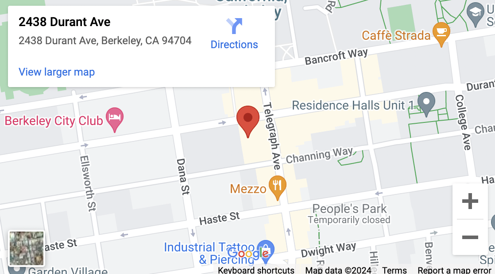
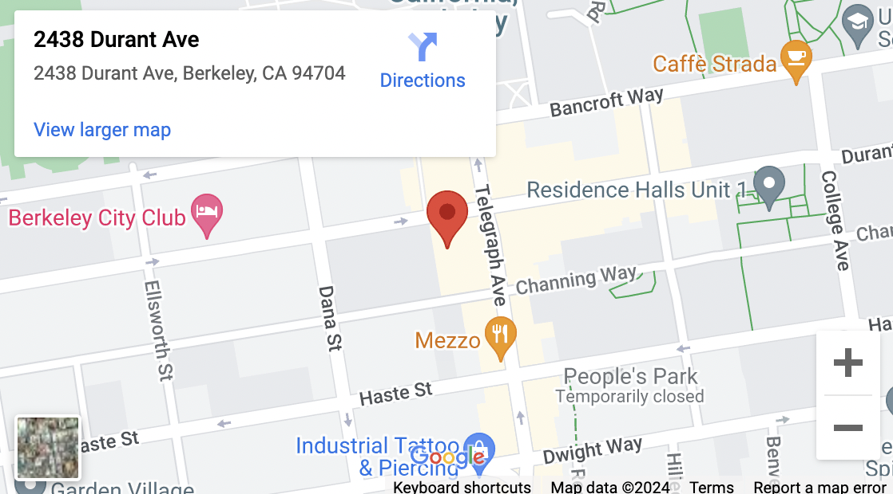

Roasting Company
Like many endeavors, the genesis of Sodoi spans back centuries. Jae Chung, Bob Baldwin, and Robert Hensley have nearly 100 years of combined experience in coffee trading, roasting, blending and serving. In addition, their mentors have passed knowledge gained from a lifetime in the coffee industry. Sodoi stands firmly on a foundation of 200 years combined industry expertise. Our knowledgeable, consumer-oriented and skilled team provides you with the best quality product and customer service. Sodoi’s deeply rooted history extends back generations. Bob and Robert have been honored to call Alfred Peet (founder of Peet’s Coffee & Tea) a mentor and friend. In addition to acquiring the vast knowledge and experience by working with Mr. Peet, Bob and Robert worked for Probat Burns, a German roasting company founded in 1864. Together, they built, restored, installed, and trained on roasting equipment, which extended from vintage machines of the early 20th century to the most refined and advanced roasting equipment built today. All of us at Sodoi are blessed to stand on the shoulders of giants in the industry who have come before and helped us discern between what adds value to our customer’s experience and what is merely the latest fad or simple shortcut and pretense to quality. These past masters of the art and science of coffee include dedicated professionals across the full spectrum of producing great coffee, from growers and millers, to roasters and brew masters. We give thanks to all the efforts of those who have blazed the trail before us.
The Team
Jae Chung
C.E.O.

Robert Hensley
C.T.O.
Bob Baldwin
Adviser
Our Coffee

Years ago I (Robert) spent some time in the cupping lab with a well known coffee man, Karl Hans von Gimborn. “You know, everything we do, and everything we ever can do… is simply to ‘unlock’ what nature has already put into this little bean.” I will always remember a singular moment when we were sitting at the cupping table and Karl picked up one little bean and looked me straight in the eyes. He said, “You know, everything we do, and everything we ever can do in designing and building equipment, is simply to ‘unlock’ what nature has already put into this little bean.” It was a moment filled with the tangible essence of a man speaking from his heart. This same message is the ethos of Sodoi. All the skills we have, all the efforts we make, are in the service of revealing the essence of what creation has built into each unique coffee. From our green buyer, to roast-master, to every brewer and server, and through everyone on the Sodoi team, including our customers, we are saying to each bean we roast and each brew we serve – Come on little bean, tell the truth, open your heart, love your life, and be the delicious coffee you can be.
Our Vision

We are a purpose-driven company, born out of the firmly established foundations of nearly 200 years of coffee industry expertise. Yet, we believe providing great coffee is not enough. We have combined our passion for people and our passion for coffee to bring to the community a place where people – whether coffee novices, coffee connoisseurs or even non-coffee drinkers – can come together to learn, enjoy and share the Sodoi spirit. Sodoi is a group of people who can be defined as those who 1) will never give up, 2) are always truthful and 3) love life. Our goal is to be the place that comes to people’s minds when they want to think about their life, with other coffee lovers, while enjoying the inspiration of other Sodois. By building and encouraging vision and dreams of enjoying life with other Sodois, the Sodoi spirit will help create a HEALTHY community. We are not just in the coffee business, we are also in the people business, delivering hope to people and communities, while serving the finest coffee.
Tasting House
 

Our Tasting House is now open! Come check us out at our Berkeley location.
We’re in the alleyway next to Unit 3, right across from Cheese N’ Stuff. The entrance to the alleyway is between Plentea and Moe’s Flowers.
If you’re interested in hosting a private event, musical performances, or other events, contact us at sodoitastinghouse@gmail.com!
Hours:
Weekdays: 7am – 6pm
Weekends: 8am – 6pm
Contact Us:
(510) 990 – 6487
sodoitastinghouse@gmail.com